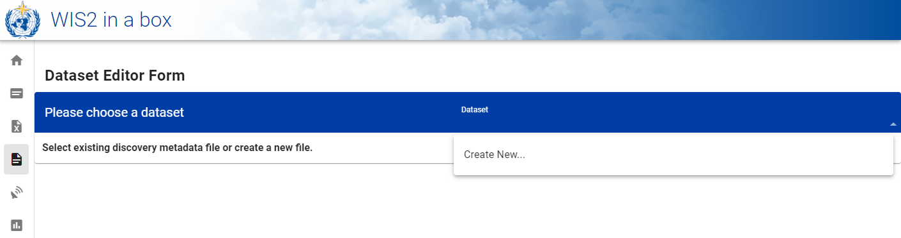
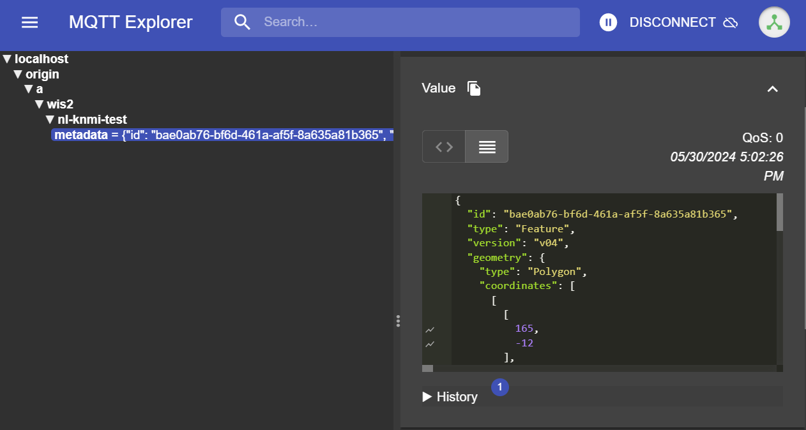

在 wis2box 中配置数据集
学习成果
在本实践课程结束时，您将能够：
- 创建一个新的数据集
- 为数据集创建发现元数据
- 配置数据集的数据映射
- 发布带有 WCMP2 记录的 WIS2 通知
- 更新并重新发布您的数据集
引言
wis2box 使用与发现元数据和数据映射相关联的数据集。
发现元数据用于创建 WCMP2（世界气象组织核心元数据配置文件 2）记录，该记录通过在您的 wis2box-broker 上发布的 WIS2 通知共享。
数据映射用于将数据插件关联到您的输入数据，允许您的数据在使用 WIS2 通知发布之前进行转换。
本课程将指导您创建新的数据集、创建发现元数据和配置数据映射。您将在 wis2box-api 中检查您的数据集，并审查您的发现元数据的 WIS2 通知。
准备
使用 MQTT Explorer 连接到您的 broker。
使用公共凭证 everyone/everyone 而不是使用您的内部 broker 凭证：

Note
您永远不需要与外部用户共享您的内部 broker 的凭证。'everyone' 用户是一个公共用户，用于启用 WIS2 通知的共享。
everyone/everyone 凭证在主题 'origin/a/wis2/#' 上具有只读访问权限。这是发布 WIS2 通知的主题。全球 Broker 可以使用这些公共凭证订阅以接收通知。
'everyone' 用户将无法看到内部主题或能够发布消息。
打开浏览器并打开页面 http://<your-host>/wis2box-webapp。确保您已登录并可以访问 '数据集编辑器' 页面。
如果您需要记住如何连接到 broker 或访问 wis2box-webapp，请参阅初始化 wis2box部分。
为 processes/wis2box 创建授权令牌
您将需要 'processes/wis2box' 端点的授权令牌来发布您的数据集。
要创建授权令牌，请通过 SSH 访问您的培训 VM，并使用以下命令登录到 wis2box-management 容器：
cd ~/wis2box-1.0.0rc1
python3 wis2box-ctl.py login
然后运行以下命令为 'processes/wis2box' 端点创建一个随机生成的授权令牌：
wis2box auth add-token --path processes/wis2box
您也可以通过将令牌作为参数提供给命令，创建一个具有特定值的令牌：
wis2box auth add-token --path processes/wis2box MyS3cretToken
确保复制令牌值并将其存储在您的本地机器上，因为您稍后将需要它。
获取您的令牌后，您可以退出 wis2box-management 容器：
exit
在 wis2box-webapp 中创建新的数据集
通过转到 http://<your-host>/wis2box-webapp 并从左侧菜单中选择 '数据集编辑器'，导航到您的 wis2box 实例的 '数据集编辑器' 页面。
在 '数据集编辑器' 页面的 '数据集' 选项卡下，点击 "创建新的 ..."：

将出现一个弹出窗口，要求您提供：
- 中心 ID：这是由 WMO 成员指定的、用于标识负责发布数据的数据中心的机构缩写（小写且无空格）。
- 数据类型：您正在为其创建元数据的数据类型。您可以选择使用预定义的模板或选择 '其他'。如果选择 '其他'，则必须手动填写更多字段。
中心 ID
您的中心 ID 应以您国家的顶级域名开头，后跟一个缩写的组织名称（例如 fr-meteofrance）。中心 ID 必须使用小写字母并且只能使用字母数字字符。下拉列表显示了 WIS2 上当前注册的所有中心 ID 以及您在 wis2box 中已创建的任何中心 ID。
数据类型模板
数据类型 字段允许您从 wis2box-webapp 数据集编辑器中可用的模板列表中选择。模板将使用适用于数据类型的建议默认值预填充表单。这包括元数据的建议标题和关键字以及预配置的数据插件。主题将固定为数据类型的默认主题。
为了培训的目的，我们将使用 weather/surface-based-observations/synop 数据类型，该数据类型包括确保数据转换为 BUFR 格式的数据插件。
如果您想使用 wis2box 发布 CAP 警报，请使用模板 weather/advisories-warnings。此模板包含一个数据插件，用于验证输入数据是否为有效的 CAP 警报，然后发布。要创建 CAP 警报并通过 wis2box 发布，您可以使用 CAP Composer。
请选择适合您组织的中心 ID。
对于数据类型，请选择weather/surface-based-observations/synop：

点击 继续填写表单 以继续，现在您将看到 数据集编辑器表单。
由于您选择了 weather/surface-based-observations/synop 数据类型，表单将预填充一些与此数据类型相关的初始值。
创建发现元数据
数据集编辑器表单允许您为您的数据集提供发现元数据，wis2box-management 容器将使用这些元数据发布 WCMP2 记录。
由于您选择了 'weather/surface-based-observations/synop' 数据类型，表单将预填充一些默认值。
请确保将自动生成的 '本地 ID' 替换为描述性名称，例如 'synop-dataset-wis2training'：

审查标题和关键字，并根据需要进行更新，并为您的数据集提供描述。
注意有选项可以将 'WMO 数据政策' 从 '核心' 更改为 '推荐' 或修改您的默认元数据标识符，请将数据政策保持为 '核心' 并使用默认元数据标识符。
接下来，审查定义您的 '时间属性' 和 '空间属性' 的部分。您可以通过更新 '北纬'、'南纬'、'东经' 和 '西经' 字段来调整边界框：

接下来，填写定义 '数据提供者的联系信息' 的部分：

最后，填写定义 '数据质量信息' 的部分：
填写完所有部分后，点击 '验证表单' 并检查表单是否有任何错误：

如果有任何错误，请更正它们并再次点击 '验证表单'。
确保您没有错误，并且您得到一个弹出提示，表明您的表单已通过验证：

接下来，在提交您的数据集之前，审查您的数据集的数据映射。
配置数据映射
由于您使用模板创建了数据集，因此数据集映射已使用 'weather/surface-based-observations/synop' 数据类型的默认插件预填充。数据插件用于在使用 WIS2 通知发布之前转换 wis2box 中的数据。

请注意，您可以点击“更新”按钮更改插件的设置，例如文件扩展名和文件模式，现在您可以保留默认设置。在后续课程中，您将了解更多关于 BUFR 和数据转换为 BUFR 格式的信息。
提交您的数据集
最后，您可以点击 '提交' 来发布您的数据集。
您需要提供您之前创建的 'processes/wis2box' 的授权令牌。如果您尚未这样做，可以按照准备部分中的说明创建新令牌。
提交您的数据集后，检查您是否收到以下消息，表明数据集已成功提交：

点击 '确定' 后，您将被重定向到数据集编辑器主页。现在如果您点击 '数据集' 选项卡，您应该会看到您的新数据集列出：

审查您的发现元数据的 WIS2 通知
转到 MQTT Explorer，如果您已连接到 broker，您应该会看到在主题 origin/a/wis2/<your-centre-id>/metadata 上发布的新 WIS2 通知：

检查您发布的 WIS2 通知的内容。您应该会看到一个与 WIS 通知消息 (WNM) 格式相对应的结构的 JSON。
Question
WIS2 通知是在哪个主题上发布的？
点击以显示答案
WIS2 通知是在主题 origin/a/wis2/<your-centre-id>/metadata 上发布的。
Question
尝试在 WIS2 通知中找到您在发现元数据中提供的标题、描述和关键字。您能找到它们吗？
点击以显示答案
请注意，您在发现元数据中提供的标题、描述和关键字不出现在 WIS2 通知有效负载中！
相反，请尝试在 WIS2 通知的“链接”部分查找规范链接：

WIS2 通知包含指向已发布 WCMP2 记录的规范链接。如果您将此链接复制粘贴到浏览器中，您将下载 WCMP2 记录并看到您提供的标题、描述和关键字。
结论
恭喜！
在这个实践课程中，您学习了如何：
- 创建一个新的数据集
- 定义您的发现元数据
- 审查您的数据映射
- 发布发现元数据
- 审查您的发现元数据的 WIS2 通知